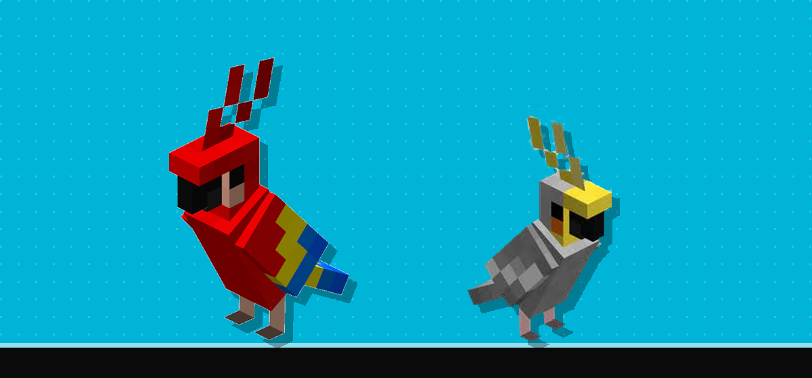
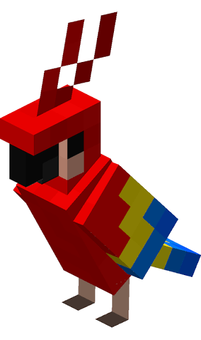
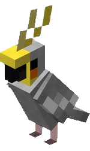

Kiki & Koko : les plumes de la police de Karminéa
Ils sont partout : au commissariat, au casino, au kebab. Kiki et Koko, les deux perroquets officiels de la police de Karminéa, sont devenus de véritables mascottes du territoire. Pour l'édition N°011, la rédaction a obtenu ce que personne n'avait réussi avant elle : une interview. Retranscription fidèle — le Karmine Déchaîné ne traduit pas le perroquet.

Ce jour-là, la rédaction avait prévu trente minutes d'entretien, un enregistreur et une liste de questions soigneusement préparées. Nous sommes repartis avec quatre plumes, une facture de kebab et l'une des interviews les plus mémorables de l'histoire du journal. Sous l'œil attendri — et parfois inquiet — de Ronan, leur collègue policier, Kiki et Koko ont accepté de répondre à toutes nos questions. Enfin, à leur manière.

Kiki police police ! Kiki Casino Kebab !

Koko Héros !! On est riche ! On est riche !
Danger danger arnaque ! Quentin écurie au feu !
RONAAAAAN Au feu au feu !! Cémoiii Titouuuu [bruit du portail du Nether]
Koko ! Babies mhhhh !
Kikiiii !! Tu danses tu danses ?
Ils se sont répondu l'un l'autre sans hésiter. La rédaction confirme : c'est la plus belle histoire d'amour du territoire.Note de la rédaction
Willy ! Police !
Willy !! Police police kebaaaab !!
CASINO CASINO !!!
Mmmmhhhh casinoooo big W !
Coin coin full tilt !! Woof woof Pina mhhhhh W
WOOF ! COT COT COT !!
Babinski ?
ALLOOOOO
L'entretien s'est achevé lorsque Kiki et Koko se sont envolés en direction du casino, sans un regard pour notre enregistreur. La rédaction tient à remercier Ronan pour sa patience, et présente ses excuses au propriétaire du kebab pour les dégâts.